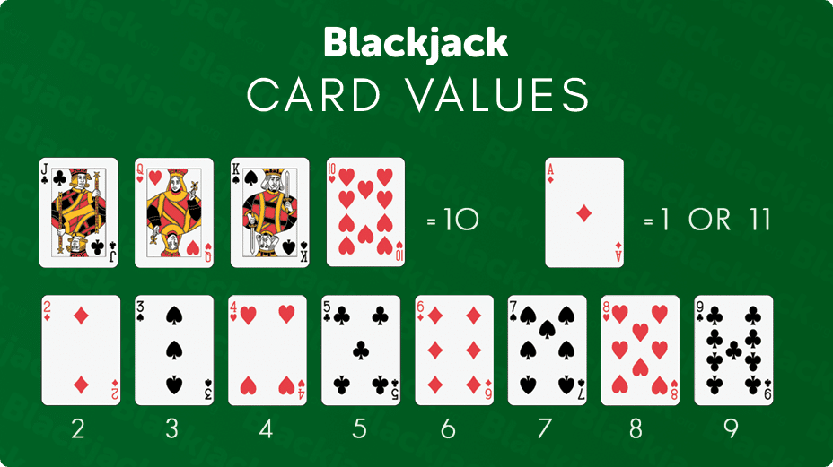
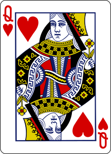
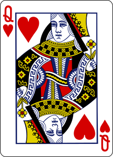
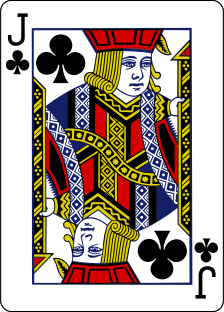
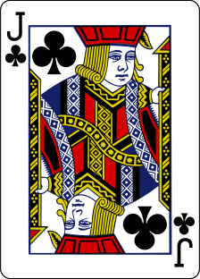

Blackjack: How to Play the Perfect Game
Let’s get started
Table of Contents
The Objective
Each player in the game tries to beat the Dealer by trying to get a count (sum of values of cards in hand) as close to 21 as possible, but without going over 21.
The Card Values
Each card has a different value. 2-9 hold their values where as 10, J, Q hold a value of 10. Ace is a special case as it can hold the value of either 1 or 11. A is always held as 11 until it causes you to bust, then it is set to 1.
The Rules
As a player, you are dealt two cards to start the game off. The Dealer gets dealt two cards as well. However, one of the Dealer’s cards is face up. The numeric cards are worth their respective values, while all face cards such as Jack, Queen, and King are all worth 10. Ace can represent either 1 or 11 depending on what the player who has an ace chooses.
The Actions
- Hit: ask for another card - try it out below!
- Stay: hold your current total and end your turn
- Surrender: fold the hand
- Doubling down: Automatically hits another card and additionally doubles the current bet on the table
- Splitting: can only be done with two cards of same value, and you split both of the cards into two separate hands. You get a card for each hand from the dealer.
Tooltip: Click the buttons underneath the cards to get more information about each action
Your Hand : 14
 
The Round
After you examine your two cards, you can do the any of the actions described above. If you are not in risk of busting, then feel free to hit and inch closer to 21. If you are in risk of busting, then feel free to stay. After you have decided where you want to stop hitting, the Dealer plays until they hit 17. If you are in danger of losing the game through bets, you are welcome to surrender anytime. If you bust, dealer wins regardless of what hand they have.And thats all! if you want more information about the game from the official Bicycle website, click here
Let’s Talk Probabilities
Now that you know the rules, let’s get into probabilities.
Hand probabilities:Using computer simulations, we can calculate the probabilities of busting in a round of blackjack based on the hand that you are dealt.
You can move the range slider to change the value of the total hand, currently set to . The graph above visualizes all of these probabilites for you. Hover over the graph to see specific data points!
As you can see, a higher hand total in blackjack means a higher probability of busting; so be careful on hitting. A hand total of 21, attained through an ace and another face card, has a 100% chance of busting; meaning you automatically win the round (unless the dealer also gets dealt 21 in which case you get your money back)
Dealer vs Player probabilities:Lets get into some deeper strategy.
Now that we know probabilities of busting based on our own hand, we can explore strategies based on the Dealer’s face up card.
Click the graph below to explore the players advantage and Dealer’s odds of busting based on the Dealer’s face up card. Hover over points to see specific data values!
Notice any trends?
Dealer’s Odds of Busting
This graph shows us the Dealer’s odds of busting based on their face up card. As a player, this is very important as we can increase our chance of winning by being confdent on betting based on the Dealer’s upcard.As we can see, there is a general downward trend of Dealer’s odds of busting the higher their face up card is. Use this to your advantage to gauge when you might hit or double down.
Upon looking at these graphs, we notice a similar trend in both of them; there is a clear relationship between player advantage and Dealer upcard.
As we can see, player advantage is negative when the Dealer hits any face card. Use this information to know when to fold; it is much harder to beat a Dealer when they show that they have a face card.
Let’s Dive Into Strategies
What actions should I take and when?In blackjack, most of the stratregy revolves around using probabilities to formulate when you want to surrender, split, double down, or hit and stand.
Lets start by looking at basic strategy for each action. As a player, your thought process should move in this order:
Should I Surrender? - First of all, not all casinos offer a surrender option. If they do, surrendering is only available on the first turn - before you are able to hit. Based on your hand totals, and the dealer’s upcard, if you see that your player advnatage is low, Surrender. You can always play the next hand.
Answer Choices
Answer Choices
Answer Choices
Should I hit or stand? - The last thing you consider is whether you hit a card or not. Obviously you already thought about this when considering whether to double donw or not, however if you aren’t extremely confident about your advantage odds (or don’t want to blow your money in a gamble by doubling down), hitting or standing is the option.
Answer Choices
Try Your Luck
Its time for you to shine. You’re no James Bond from Casino Royale, but with all of the information you have just learned, you are definitely a step closer.
Use the probability graphs and strategies that you learned from above to play the perfect game of blackjack.
Good luck and we hope you win big!
Dealer's Hand : 3


Your Hand : 20
 
Wallet: $100
CurrentBet: $0